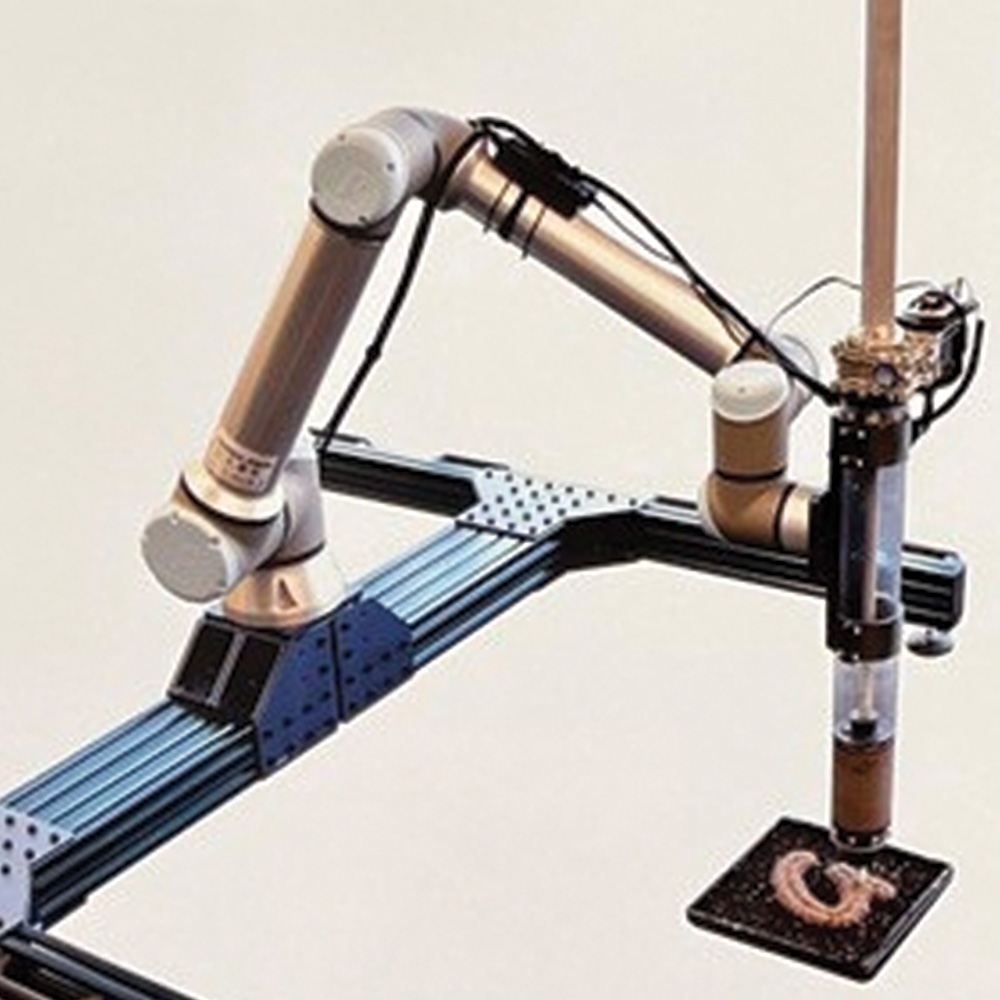

Through my studies as well as my professional experience in the fields of art and design, I have learned that what defines an excellent researcher is the way she draws upon her own unique set of experiences and insights to drive different types of research toward the unique aesthetic objectives. With degrees in Art Production and Design, Studio Arts (Ceramics), and Cultural Preservation (Materials & Technology), I am well-equipped to conduct research and write on a wide range of artistic topics. My time and effort spent in the doctoral program has prepared me to motivate and guide my students as they use technology such as 3D printers and robots, 3D modeling software, and other forms of digital fabrication, to produce hybrid works of art, conventional installations, and other forms of creative improvement.
